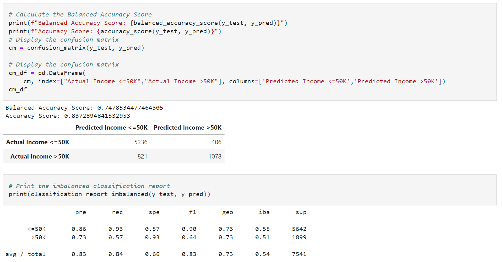

SVM
Support vector machines (SVMs) is a supervised learning model used for both classification and regression
based on geometrical properties of the data. The algorithm creates a hyperplane which is a line that separates
data into two classes.
In this analysis, we use the SVM model to train 70% of data with ten features and make the prediction on their
income, which is our independent variable with binary data “<=50K” and “>50K”. Here is our SVM model
performance:
Results

In this model, the precision score of group “<=50” is 86% and group “>50K” is 73%, which means that the
percentage of predictions are correct; The recall score of group “<=50” is 93% and group “>50K” is 57%, which
means that the percentage of the positive cases can be found; F1 score is a weighted average of the recall
and precision.
Overall, the performance of group “<=50K” is better than group “>50K”, the reason might be that the number of
“>50K” samples in the dataset is low.